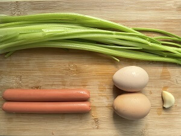
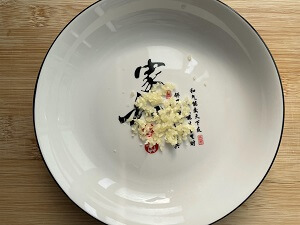
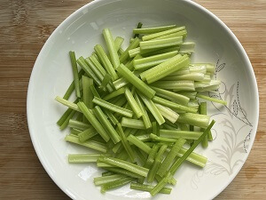
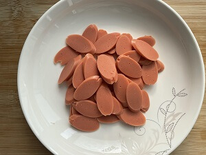
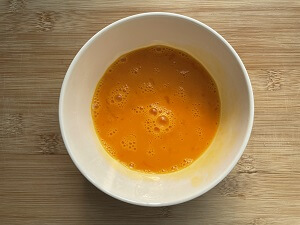
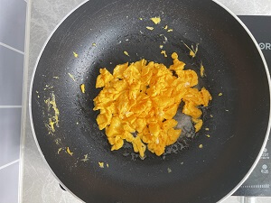
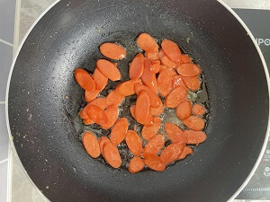
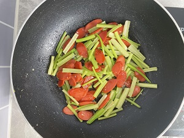
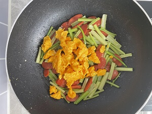
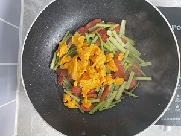

Ingredients
| Ingredient | Quantity |
|---|---|
| Celery | 150g |
| Sausage | 2 pieces |
| Eggs | 2 pieces |
| Oil | Small amt |
| Garlic | To taste |
| Salt | To taste |
| Light soy sauce | To taste |
Cooking Steps
| Image | Step |
|---|---|
|  | 1. Prepare ingredients |
|  | 2. Beat eggs |
|  | 3. Cut celery into small pieces |
|  | 4. Slice sausage |
|  | 5. Add oil over medium heat |
|  | 6. Add sausage and stir-fry |
|  | 7. Add celery and stir-fry |
|  | 8. Add beaten eggs |
|  | 9. Stir-fry until eggs are set |
|  | 10. Add salt and finish cooking |
| 11. Plate and serve |